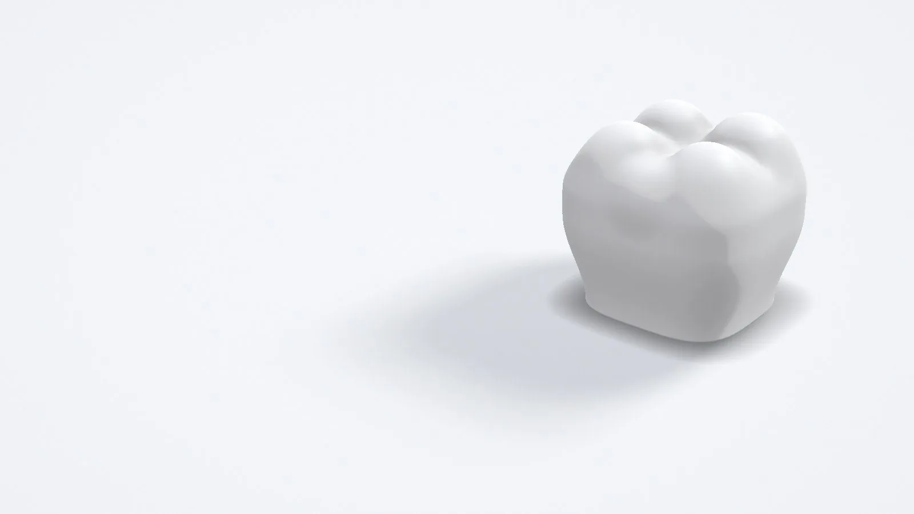
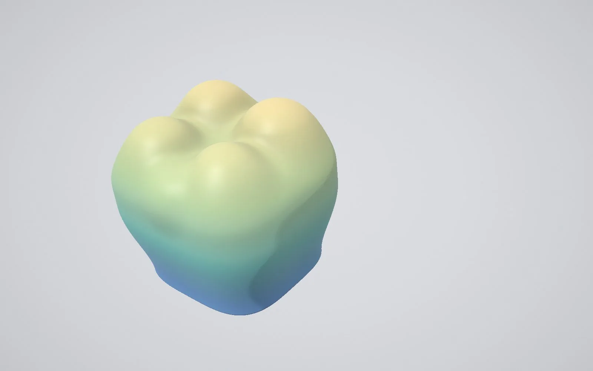

Placeholder render · replace with a photo of one of Owen's crownsOwen · Dental CAD designer · London
Remote dental CAD design for busy laboratories.
I design crown and bridge, implant and full-arch cases in exocad for labs that need extra capacity, and send them back within 24–48 hours.
Back in 24–48 hours, with you in the loop.
-
Image to source · 4:3 exocad screenshot: a lab's scan as it arrives, with the prep and opposing arch visible. Patient details hidden.
Step 01
Send your case
Upload your scans and prescription through the Submit a case form, as STL, PLY or OBJ files. Nothing changes in how your lab already works.
-
Image to source · 4:3 exocad screenshot: the finished design, showing the margin line, contacts and occlusion.
Step 02
I design it, you approve it
I design it in exocad and send you a preview to approve. You deal directly with me, the person designing your case, by email, phone or WhatsApp.
-
Image to source · 4:3 The exported STL, or the milled or printed restoration on a plain white surface.
Step 03
Files back in 24–48 hours
Finished files come back within 24–48 hours, depending on complexity, as STLs ready for your mill or printer. Redesigns are free until you're happy.
From a single crown to a full arch.
I've worked in dental CAD for six years and specialise in exocad. I'm a GDC-registered dental technician, qualified in … Use me for the odd overflow case or as a regular arrangement.
- 01Crown & bridge and veneers
- 02Implant restorations
- 03Full-arch / All-on-X cases, including split bar files
- 04Digital wax-ups
- 05Splints and other CAD appliances, on request

Free trial
Your first crown design is free.
Judge the quality before you commit.